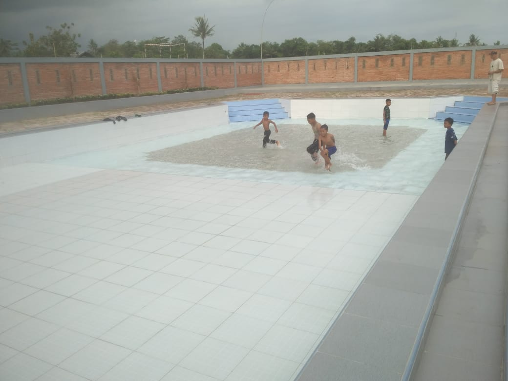
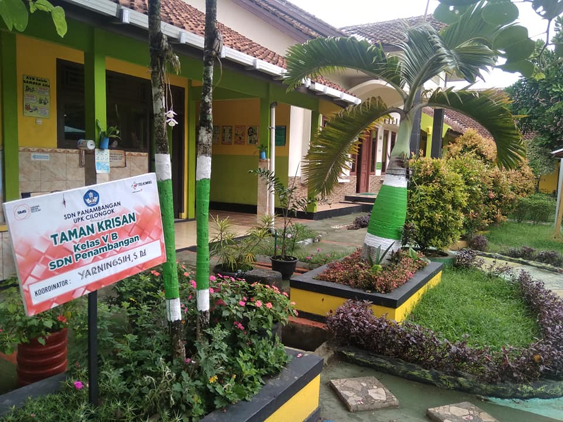

BERITA BANYUMAS
BUMDesa Susukan Ujicoba Kolam Renang Taman Lazuardi – Pembangunan kolam renang Taman Lazuardi di Desa Susukan telah selesai. BUMDesa Susukan berikan amanah untuk mengelola kolam renang tersebut. Untuk itu, pada hari Sabtu (3/11/2018) dan Minggu (4/11/2018), dilakukan ujicoba kolam renang, baca selengkapnya...

SDN Panembangan Juara Lomba Sekolah Sehat Tingkat Propinsi – Prestasi membanggakan berhasil diukir oleh SD Negeri Panembangan Kecamatan Cilongok Kabupaten Banyumas. Meski sekolah tersebut berada jauh dari kota, bahkan terletak di lereng Gunung Slamet warga sekolah dapat mewujudkan pola hidup bersih dan sehat dilingkungan sekolah. Mereka berhasil menyabet juara pertama dalam lomba sekolah sehat di tingkat Provinsi Jawa Tengah. Sehingga, sekolah yang dipimpin oleh Poppy Andhi Utami S.Pd itu berhak mewakili Provinsi Jawa Tengah maju lomba yang sama di tingkat nasional.

Kepala SDN Penembangan Poppy Andhi Utami S.Pd mengaku menjadi juara dalam lomba bukanlah tujuan utama. Menurutnya dimana dirinya berada, ingin membuat sekolah menjadi nyaman, indah, bersih dan lingkungannya kondusif untuk proses belajar-mengajar anak-anak.
SEJARAH SINGKAT
Sejarah singkat Kabupaten Banyumas berdiri pada tahun 1582, tepatnya pada hari Jum`at Kliwon tanggal 6 April 1582 Masehi, atau bertepatan tanggal 12 Robiul Awal 990 Hijriyah. Dari hasil kajian sejarawan, arkeolog dan akademisi sehingga Kemudian ditetapkan dengan Peraturan Daerah (PERDA) Kabupaten Daerah Tingkat II Banyumas Nomor 2 tahun 1990.
Tanggal tersebut masih menjadi perdebatan oleh beberapa ahli sejarah yang menemukan bukti lebih tua yang bersumber dari peninggalan museum kalibening. disebutkan bahwa joko kahiman berangkat ke pajang pada tahun 1571 bulan ramadhan dalam catatan lembaran kayu yang panjangnya hampir 2 meter koleksi museum kalibening. rencananya akan diajukan kembali oleh pemerhati budaya dan stupamas. Diharapkan nantinya akan di kaji ulang oleh pansus yang dibentuk pemda Banyumas beserta anggota DPRD Banyumas.
TEMPAT WISATA